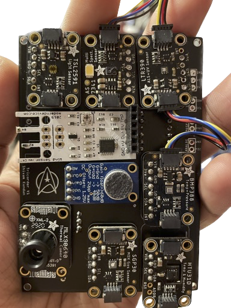

Welcome to Tricorder-RPi’s documentation!
About
Welcome to my Tricorder project documentation. This is for the raspberry pi portion of the project. Find the code at github: here.
Find the corresponding ESP32 code on github.
This is a typical paragraph. An indented literal block follows.
for a in [5,4,3,2,1]: # this is program code, shown as-is
print a
print "it's..."
# a literal block continues until the indentation ends
This text has returned to the indentation of the first paragraph, is outside of the literal block, and is therefore treated as an ordinary paragraph.
See also
modules newfile, tarfile
See also
See also
- Module
zipfile Documentation of the
zipfilestandard module.- GNU tar manual, Basic Tar Format
Documentation for tar archive files, including GNU tar extensions.
- what
Field lists map field names to field bodies, like database records. They are often part of an extension syntax.
- how
The field marker is a colon, the field name, and a colon.
The field body may contain one or more body elements, indented relative to the field marker.
Note
This function is not suitable for sending spam e-mails.
Warning
This is a warning.
Block quotes consist of indented body elements:
This theory, that is mine, is mine.
—Anne Elk (Miss)
Section to cross-reference
This is the text of the section.
It refers to the section itself, see Section to cross-reference.
Contents: